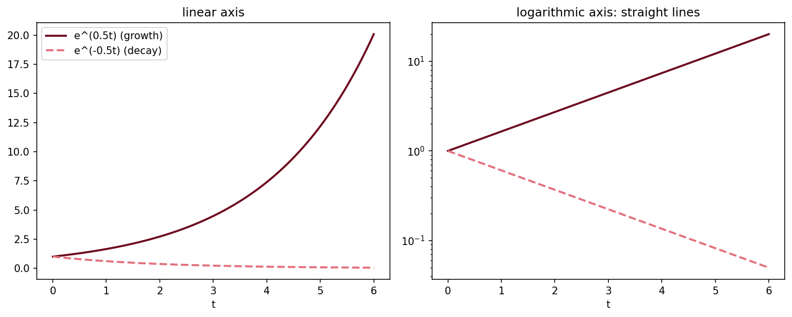
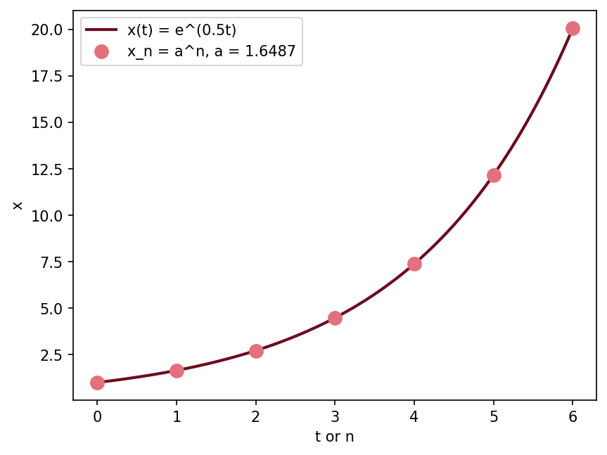
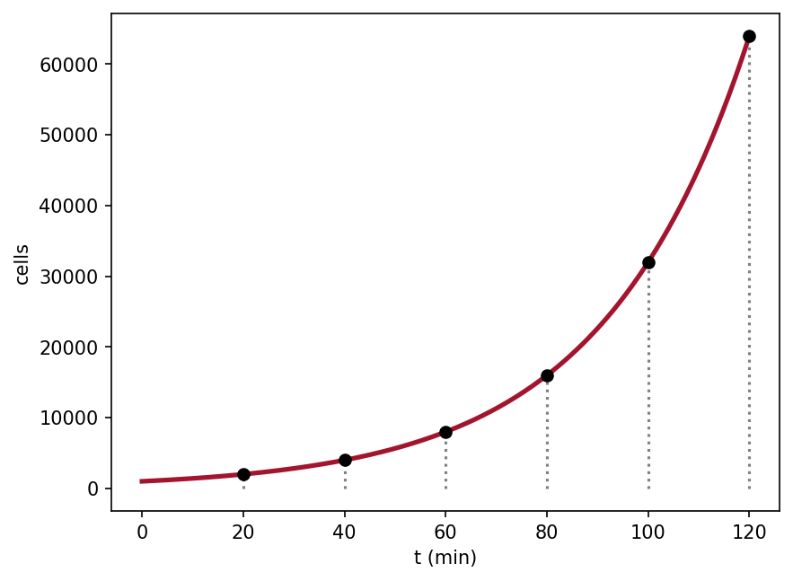
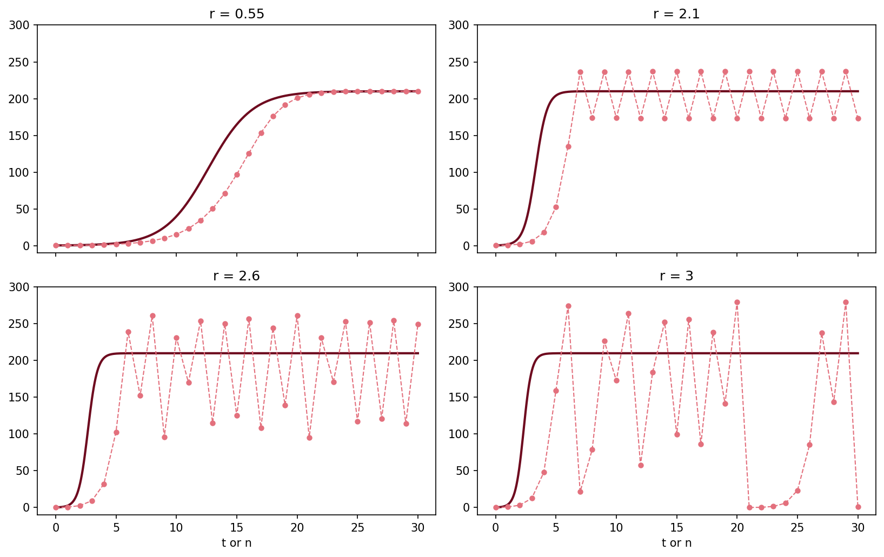

Chapter 3 · Continuous Dynamical Systems with One Variable
3.2Exponential and Logistic Growth
dx/dt = r x is the simplest growth model: the rate of change is proportional to the quantity itself, and the solution x(t) = x0 ert grows or decays exponentially. Limited resources lead to the logistic model dx/dt = r (1 − x/K) x, whose solutions approach the carrying capacity K.
For each figure of the section you will find the program that produces it. Change parameters and initial values and observe what happens. Figure and equation numbers refer to the book.
Fig. 3.8
Exponential growth and decay
x(t) = e0.5t or x(t) = e−0.5t
On a logarithmic scale both curves become straight lines. Doubling time and half-life are both ln(2)/0.5 ≈ 1.39.

# Fig. 3.8: Exponential growth and decay (book, Section 3.2, Eq. 3.15 and 3.16)
# x(t) = e^(0.5 t) and x(t) = e^(-0.5 t); left linear, right logarithmic axis (where both become straight lines)
# (c) 2026 Philipp Kügler · Program for the book "Dynamical Systems in the Life Sciences" · MIT License (see LICENSE)
using Printf, Plots
t = range(0, 6, length = 300)
bilder = []
for (achse, titel) in [(:identity, "linear axis"), (:log10, "logarithmic axis: straight lines")]
p = plot(t, exp.(0.5 .* t), yscale = achse, color = RGB(0.43, 0.04, 0.12), lw = 2, label = "e^(0.5t) (growth)", title = titel, xlabel = "t")
plot!(p, t, exp.(-0.5 .* t), ls = :dash, color = RGB(0.89, 0.44, 0.49), lw = 2, label = "e^(-0.5t) (decay)")
push!(bilder, p)
end
@printf("doubling time ln(2)/0.5 = %.4f, half-life = %.4f\n", log(2) / 0.5, log(2) / 0.5)
display(plot(bilder..., layout = (1, 2), size = (900, 420)))% Fig. 3.8: Exponential growth and decay (book, Section 3.2, Eq. 3.15 and 3.16)
% x(t) = e^(0.5 t) and x(t) = e^(-0.5 t); left linear, right logarithmic axis (where both become straight lines)
% (c) 2026 Philipp Kügler · Program for the book "Dynamical Systems in the Life Sciences" · MIT License (see LICENSE)
t = linspace(0, 6, 300);
for i = 1:2
subplot(1, 2, i);
if i == 1
plot(t, exp(0.5 * t), 'Color', [0.43 0.04 0.12], 'LineWidth', 2); hold on
plot(t, exp(-0.5 * t), '--', 'Color', [0.89 0.44 0.49], 'LineWidth', 2); hold off
title('linear axis'); legend('e^{0.5t} (growth)', 'e^{-0.5t} (decay)', 'Location', 'northwest');
else
semilogy(t, exp(0.5 * t), 'Color', [0.43 0.04 0.12], 'LineWidth', 2); hold on
semilogy(t, exp(-0.5 * t), '--', 'Color', [0.89 0.44 0.49], 'LineWidth', 2); hold off
title('logarithmic axis: straight lines');
end
xlabel('t');
end
fprintf('doubling time ln(2)/0.5 = %.4f, half-life = %.4f\n', log(2) / 0.5, log(2) / 0.5);# Fig. 3.8: Exponential growth and decay (book, Section 3.2, Eq. 3.15 and 3.16)
# x(t) = e^(0.5 t) and x(t) = e^(-0.5 t); left linear, right logarithmic axis (where both become straight lines)
# (c) 2026 Philipp Kügler · Program for the book "Dynamical Systems in the Life Sciences" · MIT License (see LICENSE)
import numpy as np
import matplotlib.pyplot as plt
t = np.linspace(0, 6, 300)
fig, axs = plt.subplots(1, 2, figsize=(11, 4.5))
for ax in axs:
ax.plot(t, np.exp(0.5 * t), color=(0.43, 0.04, 0.12), lw=2, label="e^(0.5t) (growth)")
ax.plot(t, np.exp(-0.5 * t), "--", color=(0.89, 0.44, 0.49), lw=2, label="e^(-0.5t) (decay)")
ax.set_xlabel("t")
axs[0].set_title("linear axis"); axs[0].legend()
axs[1].set_yscale("log"); axs[1].set_title("logarithmic axis: straight lines")
print(f"doubling time ln(2)/0.5 = {np.log(2) / 0.5:.4f}, half-life = {np.log(2) / 0.5:.4f}")
plt.tight_layout()
plt.show()# Fig. 3.8: Exponential growth and decay (book, Section 3.2, Eq. 3.15 and 3.16)
# x(t) = e^(0.5 t) and x(t) = e^(-0.5 t); left linear, right logarithmic axis (where both become straight lines)
# (c) 2026 Philipp Kügler · Program for the book "Dynamical Systems in the Life Sciences" · MIT License (see LICENSE)
t <- seq(0, 6, length.out = 300)
par(mfrow = c(1, 2))
for (achse in c("", "y")) {
plot(t, exp(0.5 * t), type = "l", log = achse, col = rgb(0.43, 0.04, 0.12), lwd = 2, ylim = c(0.04, 21), xlab = "t", ylab = "",
main = if (achse == "") "linear axis" else "logarithmic axis: straight lines")
lines(t, exp(-0.5 * t), lty = 2, col = rgb(0.89, 0.44, 0.49), lwd = 2)
if (achse == "") legend("topleft", legend = c("e^(0.5t) (growth)", "e^(-0.5t) (decay)"),
col = c(rgb(0.43, 0.04, 0.12), rgb(0.89, 0.44, 0.49)), lty = c(1, 2), lwd = 2)
}
cat(sprintf("doubling time ln(2)/0.5 = %.4f, half-life = %.4f\n", log(2) / 0.5, log(2) / 0.5))Output in the command window
doubling time ln(2)/0.5 = 1.3863, half-life = 1.3863Fig. 3.9
Continuous and discrete
x(t) = e0.5t, xn = an, a = e0.5
Looking at the solution only at integer times gives a geometric sequence with the factor a = er.

# Fig. 3.9: Continuous and discrete exponential growth (book, Section 3.2, Eq. 3.17)
# x(t) = e^(0.5 t) and x_n = a^n with a = e^0.5: at the times t = n both agree
# (c) 2026 Philipp Kügler · Program for the book "Dynamical Systems in the Life Sciences" · MIT License (see LICENSE)
using Printf, Plots
t = range(0, 6, length = 300); n = 0:6
a = exp(0.5)
p = plot(t, exp.(0.5 .* t), color = RGB(0.43, 0.04, 0.12), lw = 2, label = "x(t) = e^(0.5t)", xlabel = "t or n", ylabel = "x")
scatter!(p, n, a .^ n, color = RGB(0.89, 0.44, 0.49), ms = 6, label = @sprintf("x_n = a^n, a = %.4f", a))
@printf("a = e^0.5 = %.4f; a^6 = %.4f, e^3 = %.4f\n", a, a^6, exp(3))
display(p)% Fig. 3.9: Continuous and discrete exponential growth (book, Section 3.2, Eq. 3.17)
% x(t) = e^(0.5 t) and x_n = a^n with a = e^0.5: at the times t = n both agree
% (c) 2026 Philipp Kügler · Program for the book "Dynamical Systems in the Life Sciences" · MIT License (see LICENSE)
t = linspace(0, 6, 300); n = 0:6;
a = exp(0.5);
plot(t, exp(0.5 * t), 'Color', [0.43 0.04 0.12], 'LineWidth', 2); hold on
plot(n, a.^n, 'o', 'Color', [0.89 0.44 0.49], 'MarkerFaceColor', [0.89 0.44 0.49], 'MarkerSize', 9); hold off
fprintf('a = e^0.5 = %.4f; a^6 = %.4f, e^3 = %.4f\n', a, a^6, exp(3));
xlabel('t or n'); ylabel('x'); legend('x(t) = e^{0.5t}', sprintf('x_n = a^n, a = %.4f', a), 'Location', 'northwest');# Fig. 3.9: Continuous and discrete exponential growth (book, Section 3.2, Eq. 3.17)
# x(t) = e^(0.5 t) and x_n = a^n with a = e^0.5: at the times t = n both agree
# (c) 2026 Philipp Kügler · Program for the book "Dynamical Systems in the Life Sciences" · MIT License (see LICENSE)
import numpy as np
import matplotlib.pyplot as plt
t = np.linspace(0, 6, 300); n = np.arange(7)
a = np.exp(0.5)
plt.plot(t, np.exp(0.5 * t), color=(0.43, 0.04, 0.12), lw=2, label="x(t) = e^(0.5t)")
plt.plot(n, a**n, "o", color=(0.89, 0.44, 0.49), ms=9, label=f"x_n = a^n, a = {a:.4f}")
print(f"a = e^0.5 = {a:.4f}; a^6 = {a**6:.4f}, e^3 = {np.exp(3):.4f}")
plt.xlabel("t or n"); plt.ylabel("x"); plt.legend()
plt.show()# Fig. 3.9: Continuous and discrete exponential growth (book, Section 3.2, Eq. 3.17)
# x(t) = e^(0.5 t) and x_n = a^n with a = e^0.5: at the times t = n both agree
# (c) 2026 Philipp Kügler · Program for the book "Dynamical Systems in the Life Sciences" · MIT License (see LICENSE)
t <- seq(0, 6, length.out = 300); n <- 0:6
a <- exp(0.5)
plot(t, exp(0.5 * t), type = "l", col = rgb(0.43, 0.04, 0.12), lwd = 2, xlab = "t or n", ylab = "x")
points(n, a^n, pch = 16, cex = 1.5, col = rgb(0.89, 0.44, 0.49))
cat(sprintf("a = e^0.5 = %.4f; a^6 = %.4f, e^3 = %.4f\n", a, a^6, exp(3)))
legend("topleft", legend = c("x(t) = e^(0.5t)", sprintf("x_n = a^n, a = %.4f", a)), col = c(rgb(0.43, 0.04, 0.12), rgb(0.89, 0.44, 0.49)),
lwd = c(2, NA), pch = c(NA, 16))Output in the command window
a = e^0.5 = 1.6487; a^6 = 20.0855, e^3 = 20.0855Fig. 3.10
Growth of E. coli
x(t) = 1000 · 2t/20 = 1000 ert, r = ln(2)/20
The doubling time tV = 20 minutes gives the growth rate r = ln(2)/tV. After two hours, 1000 cells have become 64,000.

# Fig. 3.10: Growth of E. coli with a doubling time of 20 minutes (book, Section 3.2, Eq. 3.18)
# x(t) = 1000 · 2^(t/20) = 1000 e^(r t) with r = ln(2)/20 per minute
# (c) 2026 Philipp Kügler · Program for the book "Dynamical Systems in the Life Sciences" · MIT License (see LICENSE)
using Printf, Plots
tV = 20; x0 = 1000
r = log(2) / tV
t = range(0, 120, length = 300)
p = plot(t, x0 .* exp.(r .* t), color = RGB(0.64, 0.08, 0.18), lw = 2.5, legend = false, xticks = 0:20:120, xlabel = "t (min)", ylabel = "cells")
for k in 1:6
plot!(p, [tV * k, tV * k], [0, x0 * 2^k], ls = :dot, color = :gray); scatter!(p, [tV * k], [x0 * 2^k], color = :black)
end
@printf("r = ln(2)/20 = %.5f per minute; x(120) = %.0f cells\n", r, x0 * exp(r * 120))
display(p)% Fig. 3.10: Growth of E. coli with a doubling time of 20 minutes (book, Section 3.2, Eq. 3.18)
% x(t) = 1000 · 2^(t/20) = 1000 e^(r t) with r = ln(2)/20 per minute
% (c) 2026 Philipp Kügler · Program for the book "Dynamical Systems in the Life Sciences" · MIT License (see LICENSE)
tV = 20; x0 = 1000;
r = log(2) / tV;
t = linspace(0, 120, 300);
plot(t, x0 * exp(r * t), 'Color', [0.64 0.08 0.18], 'LineWidth', 2.5); hold on
for k = 1:6
plot([tV * k tV * k], [0 x0 * 2^k], ':', 'Color', [0.5 0.5 0.5]); plot(tV * k, x0 * 2^k, 'ko', 'MarkerFaceColor', 'k');
end
hold off
fprintf('r = ln(2)/20 = %.5f per minute; x(120) = %.0f cells\n', r, x0 * exp(r * 120));
xlabel('t (min)'); ylabel('cells'); set(gca, 'XTick', 0:20:120);# Fig. 3.10: Growth of E. coli with a doubling time of 20 minutes (book, Section 3.2, Eq. 3.18)
# x(t) = 1000 · 2^(t/20) = 1000 e^(r t) with r = ln(2)/20 per minute
# (c) 2026 Philipp Kügler · Program for the book "Dynamical Systems in the Life Sciences" · MIT License (see LICENSE)
import numpy as np
import matplotlib.pyplot as plt
tV, x0 = 20, 1000
r = np.log(2) / tV
t = np.linspace(0, 120, 300)
plt.plot(t, x0 * np.exp(r * t), color=(0.64, 0.08, 0.18), lw=2.5)
for k in range(1, 7):
plt.plot([tV * k, tV * k], [0, x0 * 2**k], ":", color="0.5"); plt.plot(tV * k, x0 * 2**k, "ko")
print(f"r = ln(2)/20 = {r:.5f} per minute; x(120) = {x0 * np.exp(r * 120):.0f} cells")
plt.xlabel("t (min)"); plt.ylabel("cells"); plt.xticks(range(0, 121, 20))
plt.show()# Fig. 3.10: Growth of E. coli with a doubling time of 20 minutes (book, Section 3.2, Eq. 3.18)
# x(t) = 1000 · 2^(t/20) = 1000 e^(r t) with r = ln(2)/20 per minute
# (c) 2026 Philipp Kügler · Program for the book "Dynamical Systems in the Life Sciences" · MIT License (see LICENSE)
tV <- 20; x0 <- 1000
r <- log(2) / tV
t <- seq(0, 120, length.out = 300)
plot(t, x0 * exp(r * t), type = "l", col = rgb(0.64, 0.08, 0.18), lwd = 2.5, xaxt = "n", xlab = "t (min)", ylab = "cells")
axis(1, at = seq(0, 120, 20))
for (k in 1:6) { lines(c(tV * k, tV * k), c(0, x0 * 2^k), lty = 3, col = "grey50"); points(tV * k, x0 * 2^k, pch = 16) }
cat(sprintf("r = ln(2)/20 = %.5f per minute; x(120) = %.0f cells\n", r, x0 * exp(r * 120)))Output in the command window
r = ln(2)/20 = 0.03466 per minute; x(120) = 64000 cellsFig. 3.12
Logistic growth of yeast
dx/dt = r (1 − x/K) x, r = 0.55, K = 210
Small initial values grow in an S shape, initial values above K decrease. All solutions approach the carrying capacity K.

# Fig. 3.12: Logistic growth of yeast (book, Section 3.2, Eq. 3.19 and 3.20)
# dx/dt = r (1 - x/K) x with r = 0.55 per hour, K = 210 (million cells per ml); solution x(t) = x0 K / (x0 + (K - x0) e^(-rt))
# (c) 2026 Philipp Kügler · Program for the book "Dynamical Systems in the Life Sciences" · MIT License (see LICENSE)
using Printf, Plots
r = 0.55; K = 210
x(t, x0) = x0 * K / (x0 + (K - x0) * exp(-r * t))
t = range(0, 20, length = 300)
rot = [RGB(0.43, 0.04, 0.12), RGB(0.64, 0.08, 0.18), RGB(0.89, 0.44, 0.49)]
p = plot(xlabel = "t (h)", ylabel = "x(t)", legend = :bottomright)
for (i, x0) in enumerate([5, 50, 300])
plot!(p, t, x.(t, x0), ls = [:solid, :dash, :dashdot][i], color = rot[i], lw = 2, label = "x0 = $x0")
@printf("x0 = %3d: x(5) = %6.2f, x(20) = %6.2f\n", x0, x(5, x0), x(20, x0))
end
hline!(p, [K], ls = :dash, color = :black, label = "")
display(p)% Fig. 3.12: Logistic growth of yeast (book, Section 3.2, Eq. 3.19 and 3.20)
% dx/dt = r (1 - x/K) x with r = 0.55 per hour, K = 210 (million cells per ml); solution x(t) = x0 K / (x0 + (K - x0) e^(-rt))
% (c) 2026 Philipp Kügler · Program for the book "Dynamical Systems in the Life Sciences" · MIT License (see LICENSE)
r = 0.55; K = 210;
x = @(t, x0) x0 * K ./ (x0 + (K - x0) * exp(-r * t));
t = linspace(0, 20, 300);
rot = [0.43 0.04 0.12; 0.64 0.08 0.18; 0.89 0.44 0.49]; stil = {'-', '--', '-.'}; x0s = [5 50 300];
hold on
for i = 1:3
plot(t, x(t, x0s(i)), stil{i}, 'Color', rot(i, :), 'LineWidth', 2, 'DisplayName', sprintf('x0 = %d', x0s(i)));
fprintf('x0 = %3d: x(5) = %6.2f, x(20) = %6.2f\n', x0s(i), x(5, x0s(i)), x(20, x0s(i)));
end
plot([0 20], [K K], 'k--', 'HandleVisibility', 'off'); hold off
xlabel('t (h)'); ylabel('x(t)'); legend('show', 'Location', 'southeast');# Fig. 3.12: Logistic growth of yeast (book, Section 3.2, Eq. 3.19 and 3.20)
# dx/dt = r (1 - x/K) x with r = 0.55 per hour, K = 210 (million cells per ml); solution x(t) = x0 K / (x0 + (K - x0) e^(-rt))
# (c) 2026 Philipp Kügler · Program for the book "Dynamical Systems in the Life Sciences" · MIT License (see LICENSE)
import numpy as np
import matplotlib.pyplot as plt
r, K = 0.55, 210
x = lambda t, x0: x0 * K / (x0 + (K - x0) * np.exp(-r * t))
t = np.linspace(0, 20, 300)
rot = [(0.43, 0.04, 0.12), (0.64, 0.08, 0.18), (0.89, 0.44, 0.49)]
for i, x0 in enumerate([5, 50, 300]):
plt.plot(t, x(t, x0), ["-", "--", "-."][i], color=rot[i], lw=2, label=f"x0 = {x0}")
print(f"x0 = {x0:3d}: x(5) = {x(5, x0):6.2f}, x(20) = {x(20, x0):6.2f}")
plt.axhline(K, color="k", ls="--", lw=1)
plt.xlabel("t (h)"); plt.ylabel("x(t)"); plt.legend()
plt.show()# Fig. 3.12: Logistic growth of yeast (book, Section 3.2, Eq. 3.19 and 3.20)
# dx/dt = r (1 - x/K) x with r = 0.55 per hour, K = 210 (million cells per ml); solution x(t) = x0 K / (x0 + (K - x0) e^(-rt))
# (c) 2026 Philipp Kügler · Program for the book "Dynamical Systems in the Life Sciences" · MIT License (see LICENSE)
r <- 0.55; K <- 210
x <- function(t, x0) x0 * K / (x0 + (K - x0) * exp(-r * t))
t <- seq(0, 20, length.out = 300)
rot <- c(rgb(0.43, 0.04, 0.12), rgb(0.64, 0.08, 0.18), rgb(0.89, 0.44, 0.49))
x0s <- c(5, 50, 300)
plot(NULL, xlim = c(0, 20), ylim = c(0, 310), xlab = "t (h)", ylab = "x(t)")
for (i in 1:3) {
lines(t, x(t, x0s[i]), lty = i, col = rot[i], lwd = 2)
cat(sprintf("x0 = %3d: x(5) = %6.2f, x(20) = %6.2f\n", x0s[i], x(5, x0s[i]), x(20, x0s[i])))
}
abline(h = K, lty = 2)
legend("bottomright", legend = sprintf("x0 = %d", x0s), col = rot, lty = 1:3, lwd = 2)Output in the command window
x0 = 5: x(5) = 57.99, x(20) = 209.86
x0 = 50: x(5) = 174.34, x(20) = 209.99
x0 = 300: x(5) = 214.11, x(20) = 210.00Fig. 3.13
Continuous and discrete-time logistic model
xn+1 = xn + r xn (1 − xn/K)
For small r both models behave similarly. For larger r, cycles and chaos arise in the discrete-time model, whereas the continuous solution always tends to K monotonically.

# Fig. 3.13: Continuous and discrete-time logistic model (book, Section 3.2, Eq. 3.20)
# line: solution of dx/dt = r (1 - x/K) x; points: x_{n+1} = x_n + r x_n (1 - x_n/K); K = 210, x0 = 0.2
# (c) 2026 Philipp Kügler · Program for the book "Dynamical Systems in the Life Sciences" · MIT License (see LICENSE)
using Printf, Plots
K = 210; x0 = 0.2
t = range(0, 30, length = 400)
bilder = []
for r in (0.55, 2.1, 2.6, 3.0)
p = plot(t, x0 .* K ./ (x0 .+ (K - x0) .* exp.(-r .* t)), color = RGB(0.43, 0.04, 0.12), lw = 2, legend = false,
ylims = (-10, 300), title = "r = $r", xlabel = "t or n")
x = zeros(31); x[1] = x0
for n in 1:30
x[n + 1] = x[n] + r * x[n] * (1 - x[n] / K)
end
plot!(p, 0:30, x, ls = :dash, marker = :circle, ms = 3, color = RGB(0.89, 0.44, 0.49))
push!(bilder, p)
println(@sprintf("r = %g: x_27 ... x_30 = ", r), join([@sprintf("%.1f", v) for v in x[28:31]], " "))
end
display(plot(bilder..., layout = (2, 2), size = (900, 650)))% Fig. 3.13: Continuous and discrete-time logistic model (book, Section 3.2, Eq. 3.20)
% line: solution of dx/dt = r (1 - x/K) x; points: x_{n+1} = x_n + r x_n (1 - x_n/K); K = 210, x0 = 0.2
% (c) 2026 Philipp Kügler · Program for the book "Dynamical Systems in the Life Sciences" · MIT License (see LICENSE)
K = 210; x0 = 0.2;
t = linspace(0, 30, 400); rs = [0.55 2.1 2.6 3.0];
for i = 1:4
r = rs(i);
subplot(2, 2, i);
plot(t, x0 * K ./ (x0 + (K - x0) * exp(-r * t)), 'Color', [0.43 0.04 0.12], 'LineWidth', 2); hold on
x = zeros(1, 31); x(1) = x0;
for n = 1:30
x(n + 1) = x(n) + r * x(n) * (1 - x(n) / K);
end
plot(0:30, x, '--o', 'Color', [0.89 0.44 0.49], 'MarkerSize', 4); hold off
title(sprintf('r = %g', r)); ylim([-10 300]);
if i > 2, xlabel('t or n'); end
fprintf('r = %g: x_27 ... x_30 = %s\n', r, sprintf('%.1f ', x(28:31)));
end# Fig. 3.13: Continuous and discrete-time logistic model (book, Section 3.2, Eq. 3.20)
# line: solution of dx/dt = r (1 - x/K) x; points: x_{n+1} = x_n + r x_n (1 - x_n/K); K = 210, x0 = 0.2
# (c) 2026 Philipp Kügler · Program for the book "Dynamical Systems in the Life Sciences" · MIT License (see LICENSE)
import numpy as np
import matplotlib.pyplot as plt
K, x0 = 210, 0.2
fig, axs = plt.subplots(2, 2, figsize=(11, 7), sharex=True)
t = np.linspace(0, 30, 400)
for ax, r in zip(axs.flat, [0.55, 2.1, 2.6, 3.0]):
ax.plot(t, x0 * K / (x0 + (K - x0) * np.exp(-r * t)), color=(0.43, 0.04, 0.12), lw=2)
x = [x0]
for n in range(30):
x.append(x[n] + r * x[n] * (1 - x[n] / K))
ax.plot(range(31), x, "--o", color=(0.89, 0.44, 0.49), ms=4, lw=1)
ax.set_title(f"r = {r:g}"); ax.set_ylim(-10, 300)
print(f"r = {r:g}: x_27 ... x_30 =", " ".join(f"{v:.1f}" for v in x[27:]))
for ax in axs[1]: ax.set_xlabel("t or n")
plt.tight_layout()
plt.show()# Fig. 3.13: Continuous and discrete-time logistic model (book, Section 3.2, Eq. 3.20)
# line: solution of dx/dt = r (1 - x/K) x; points: x_{n+1} = x_n + r x_n (1 - x_n/K); K = 210, x0 = 0.2
# (c) 2026 Philipp Kügler · Program for the book "Dynamical Systems in the Life Sciences" · MIT License (see LICENSE)
K <- 210; x0 <- 0.2
t <- seq(0, 30, length.out = 400)
par(mfrow = c(2, 2), mar = c(4, 4, 2, 1))
for (r in c(0.55, 2.1, 2.6, 3.0)) {
plot(t, x0 * K / (x0 + (K - x0) * exp(-r * t)), type = "l", col = rgb(0.43, 0.04, 0.12), lwd = 2, ylim = c(-10, 300),
xlab = "t or n", ylab = "", main = sprintf("r = %g", r))
x <- numeric(31); x[1] <- x0
for (n in 1:30) x[n + 1] <- x[n] + r * x[n] * (1 - x[n] / K)
lines(0:30, x, type = "o", lty = 2, pch = 16, cex = 0.6, col = rgb(0.89, 0.44, 0.49))
cat(sprintf("r = %g: x_27 ... x_30 =", r), sprintf("%.1f", x[28:31]), "\n")
}Output in the command window
r = 0.55: x_27 ... x_30 = 210.0 210.0 210.0 210.0
r = 2.1: x_27 ... x_30 = 237.0 173.0 237.0 173.0
r = 2.6: x_27 ... x_30 = 121.3 254.5 114.3 249.7
r = 3: x_27 ... x_30 = 237.7 143.8 279.8 0.8